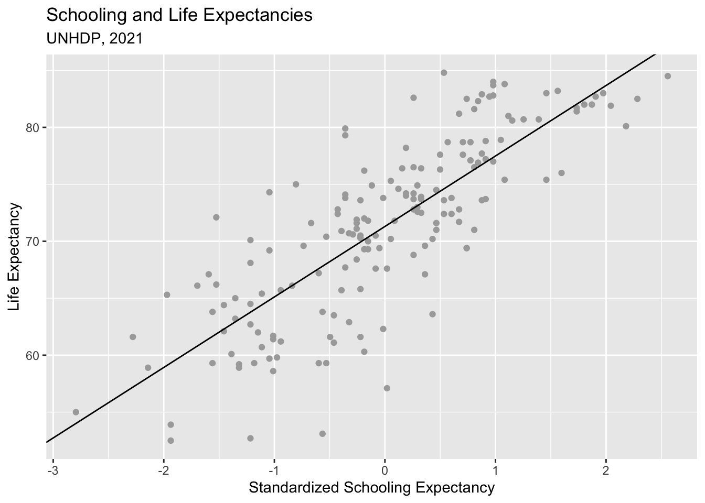
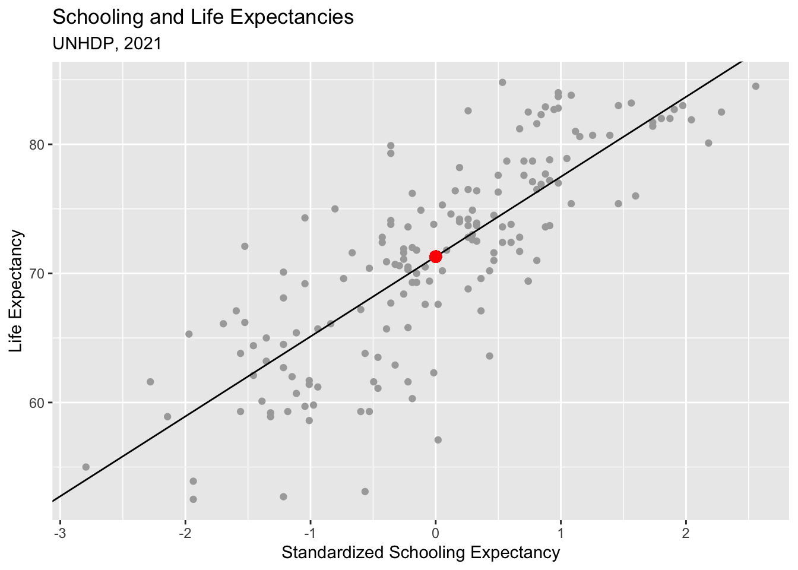
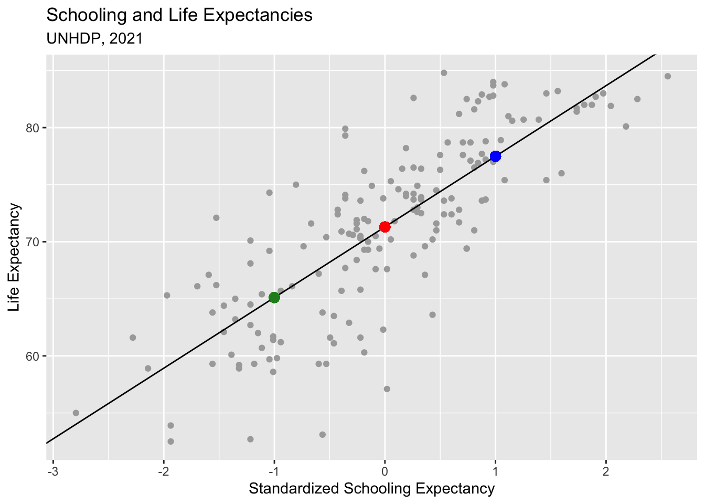
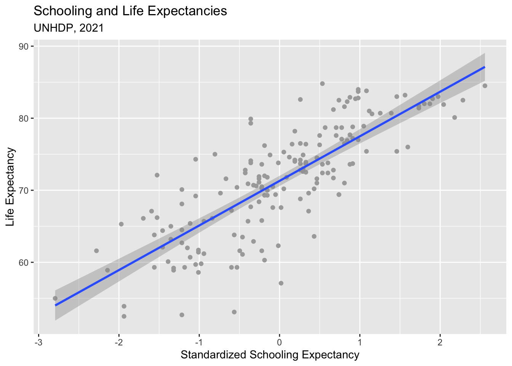
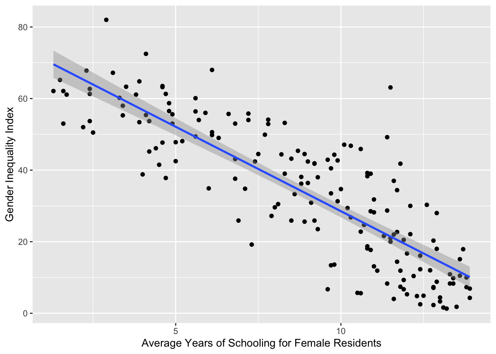
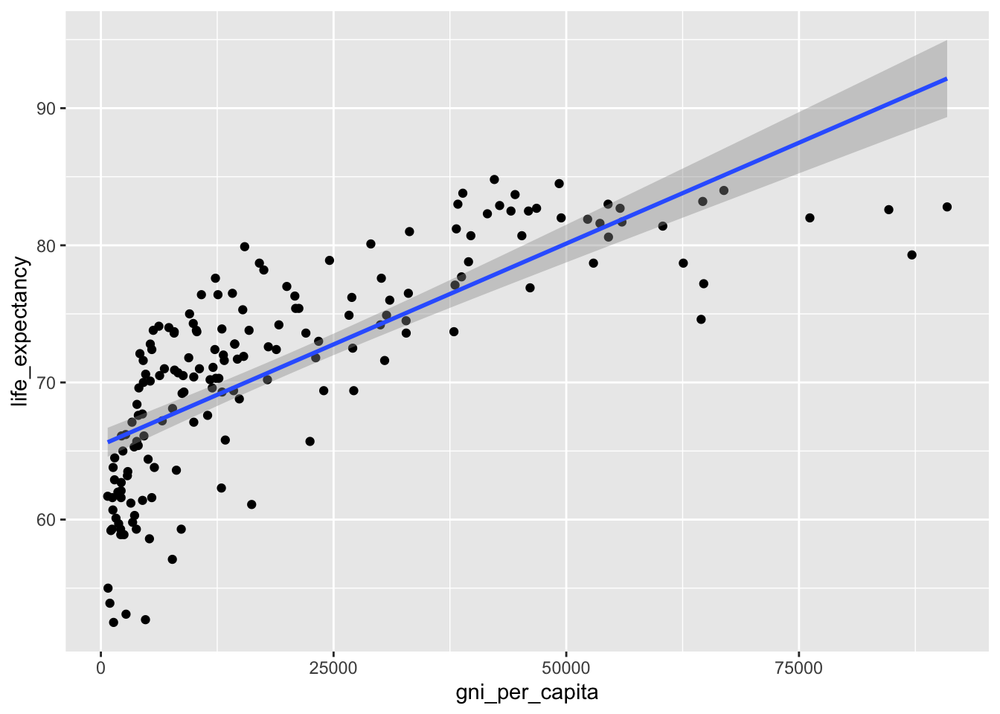
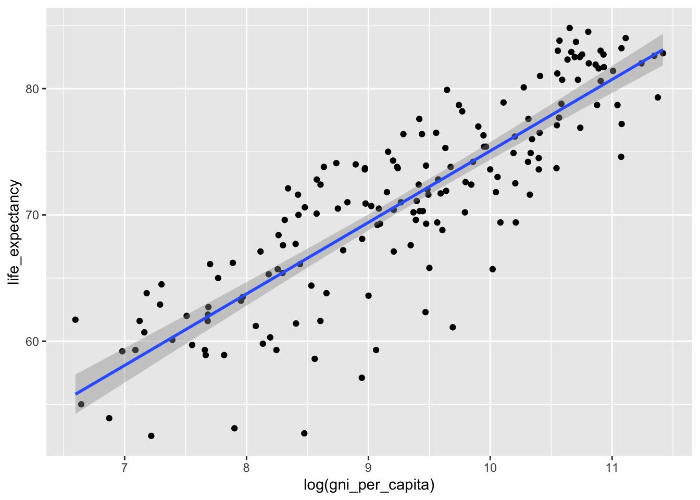

library(tidyverse)Introducing Regression
Setting Up
Load the usual packages:
We’ll use three different datasets from the United Nations Human Development Program. Load each separately:
human_development_index <- read_csv("https://raw.githubusercontent.com/mjclawrence/soci385_f23/main/data/hdi/human_development_index.csv")
gender_index <- read_csv("https://raw.githubusercontent.com/mjclawrence/soci385_f23/main/data/hdi/gender_index.csv")
hdi_gender <- read_csv("https://raw.githubusercontent.com/mjclawrence/soci385_f23/main/data/hdi/hdi_gender.csv")How do we combine these three datasets into one? Take a look at the variables in each. Is there a common variable we could “match” across them? If so, we could use a join() function to merge them.
Let’s join the two gender-related datasets first (though which order you do this doesn’t really matter). The country variable is in both so we’ll combine columns based on the values of that variable.
gender_datasets <- left_join(gender_index, hdi_gender, by = "country")Now we’ll repeat to combine the human_development_index dataset with the new gender_datasets data frame we just created. We’ll name our newest merged dataset hdi:
hdi <- left_join(gender_datasets, human_development_index, by = "country")Introduction
For two continuous variables, regression is based on fitting a line that has an alpha and a beta. This linear relationship is represented formally as:
\(\Large{\hat{y_i} = \alpha + \beta X_i + \epsilon_i}\)
- Read as: regress y on x
- \(\hat{y_i}\) = predicted outcome, the best guess
- \(\alpha\) = intercept or constant, where the line hits the y-axis when x is 0
- \(\beta\) = the slope, the multiplier for every X, known as the coefficient
- \(X_i\) = the observed value of X
- \(\epsilon_i\) = error (or residual), difference between observed and predicted values
Example from UN HDP
Our first example will regress life_expectancy on the standardized values of schooling. Before moving forward, we need to standardize the schooling values, which we can do with the scale() function:
hdi <- hdi |>
mutate(std_schooling_expected = scale(schooling_expected))Finding Alpha and Beta
Lots of lines could pass through a scatterplot. The line we want to find is the one that makes the sum of the squared residuals as small as possible.
To find alpha and beta, we need a few basic statistics: the mean and standard deviation of both variables and the correlation between them.
# Correlation
cor(hdi$std_schooling_expected, hdi$life_expectancy) [,1]
[1,] 0.8001698# Mean and Standard Deviation of X
mean(hdi$std_schooling_expected)[1] 2.089321e-16sd(hdi$std_schooling_expected)[1] 1# Mean and Standard Deviation of Y
mean(hdi$life_expectancy)[1] 71.29941sd(hdi$life_expectancy)[1] 7.733692To find beta, we need the correlation and the two standard deviations: \(\Large{\beta = cor_{xy} \frac {s_{y}}{s_{x}}}\)
# Finding Beta
beta <- cor(hdi$std_schooling_expected,
hdi$life_expectancy) *
(sd(hdi$life_expectancy) / sd(hdi$std_schooling_expected))
beta [,1]
[1,] 6.188267To find alpha, we need beta and the two means: \(\Large{\alpha = \bar{y} - \beta \bar{x}}\)
# Finding alpha
alpha <- mean(hdi$life_expectancy) -
beta*(mean(hdi$std_schooling_expected))
alpha [,1]
[1,] 71.29941Plotting Regressions, Part One
Once we have alpha (the intercept) and beta (the slope), we can add the line to a plot using geom_abline():
schooling_life_plot1 <- ggplot(hdi, aes(
x = std_schooling_expected, y = life_expectancy))
schooling_life_plot1 + geom_point(color = "Dark Gray") +
labs(x = "Standardized Schooling Expectancy",
y = "Life Expectancy",
title = "Schooling and Life Expectancies",
subtitle = "UNHDP, 2021") +
geom_abline(intercept = 71.29941, slope = 6.188267)
If this line is correct, there should be a point on the line where x = 0 and y = 71.29941:
schooling_life_plot1 + geom_point(color = "Dark Gray") +
labs(x = "Standardized Schooling Expectancy",
y = "Life Expectancy",
title = "Schooling and Life Expectancies",
subtitle = "UNHDP, 2021") +
geom_abline(intercept = 71.29941, slope = 6.188267) +
geom_point(x = 0, y = 71.29941, color = "Red", size = 3)
Predicting Values of Y
Knowing alpha and beta will allow us to predict the value of Y for any value of X. And all of these predicted values will fall on our line.
If x is 1 standard deviation above the mean, what is the predicted value of y?
REPLACE THIS LINE WITH YOUR COD
predicted_y_plus1sd <- alpha + beta*1
predicted_y_plus1sd [,1]
[1,] 77.48768If x is 1 standard deviation below the mean, what is the predicted value of y?
REPLACE THIS LINE WITH YOUR CODE
predicted_y_minus1sd <- alpha + beta*-1
predicted_y_minus1sd [,1]
[1,] 65.11114Now add these two points to the plot:
REPLACE THIS LINE WITH YOUR CODE
schooling_life_plot1 + geom_point(color = "Dark Gray") +
labs(x = "Standardized Schooling Expectancy",
y = "Life Expectancy",
title = "Schooling and Life Expectancies",
subtitle = "UNHDP, 2021") +
geom_abline(intercept = 71.29941, slope = 6.188267) +
geom_point(x = 0, y = 71.29941, color = "Red", size = 3) +
geom_point(x = 1, y = 77.48768, color = "Blue", size = 3) +
geom_point(x = -1, y = 65.11114, color = "Forest Green", size = 3)
Regression in R
To find the estimates for a linear model, R uses the lm() function. The syntax here is to list the dependent (y) variable first, followed by a tilde (~) and the independent (x) variable, and then the name of the data frame where those variables are located. And it will be much more convenient if you save the output of this function as an object:
schooling_life_model1 <-
lm(life_expectancy ~ std_schooling_expected, data = hdi)Now review the saved model using summary():
summary(schooling_life_model1)
Call:
lm(formula = life_expectancy ~ std_schooling_expected, data = hdi)
Residuals:
Min 1Q Median 3Q Max
-14.7062 -3.1567 0.3007 2.7595 10.8199
Coefficients:
Estimate Std. Error t value Pr(>|t|)
(Intercept) 71.2994 0.3568 199.82 <2e-16 ***
std_schooling_expected 6.1883 0.3579 17.29 <2e-16 ***
---
Signif. codes: 0 '***' 0.001 '**' 0.01 '*' 0.05 '.' 0.1 ' ' 1
Residual standard error: 4.652 on 168 degrees of freedom
Multiple R-squared: 0.6403, Adjusted R-squared: 0.6381
F-statistic: 299 on 1 and 168 DF, p-value: < 2.2e-16You should see the numbers we just calculated and lots of test statistics (standard errors, t-values, p-values) that look familiar.
For now, focus on the “Estimate” column in the center section. The estimate for the intercept is the value of alpha. The estimate for std_schooling_expected is the value of beta.
In words, this model says that when x = 0, the predicted value of y is 71.29941 And for every one unit increase in x (in this example, our unit is standard deviations of expected schooling), the predicted value of y increases by 6.188267, on average.
The std.error column reports the standard error of each coefficient. That standard error is calculated as:
\(\Large{se = \frac{s} {\sqrt{\sum{ (x - \bar{x})^2}}}}\)
with
\(\Large{s = \sqrt {\frac {\sum{(y - \hat{y})^2}}{n-2}}}\)
The part of this equation that is important to learn is how to save predicted values of y based on the model. You do so by thinking of the model as a data frame and fitted.values as the variable:
hdi$predicted_life_expectancy <- schooling_life_model1$fitted.valuesAnd now you can use these predicted values of y just as you would any other variable. In this example, they are used to calculate the standard error of the coefficient:
se_numerator <- sqrt(sum((hdi$life_expectancy -
hdi$predicted_life_expectancy)^2) /
(length(hdi$life_expectancy) - 2))
se_denominator <- sqrt(sum((hdi$std_schooling_expected -
mean(hdi$std_schooling_expected))^2))
se <- se_numerator / se_denominator
se[1] 0.3578653That value is the same as what the model provides as the standard error for the std_schooling_expected coefficient:
summary(schooling_life_model1)
Call:
lm(formula = life_expectancy ~ std_schooling_expected, data = hdi)
Residuals:
Min 1Q Median 3Q Max
-14.7062 -3.1567 0.3007 2.7595 10.8199
Coefficients:
Estimate Std. Error t value Pr(>|t|)
(Intercept) 71.2994 0.3568 199.82 <2e-16 ***
std_schooling_expected 6.1883 0.3579 17.29 <2e-16 ***
---
Signif. codes: 0 '***' 0.001 '**' 0.01 '*' 0.05 '.' 0.1 ' ' 1
Residual standard error: 4.652 on 168 degrees of freedom
Multiple R-squared: 0.6403, Adjusted R-squared: 0.6381
F-statistic: 299 on 1 and 168 DF, p-value: < 2.2e-16The t value column is the test statistic for a t-test that the coefficient is different from zero. It is calculated as the estimate divided by the standard error:
6.1883 / 0.3579[1] 17.29058The Pr(>|t|) column is the p value for a two-tailed test of the test statistic. It is calculated using tools we know:
# Area in right tail:
pr_tail <- 1 - pt(17.29, df = 168)
# Area in both tails (what output gives):
2 * pr_tail[1] 0Plotting Regressions, Part Two
The geom_abline() is more helpful for teaching than analyzing. It will be more common to use geom_smooth(method = lm) to add a line to a scatterplot:
schooling_life_plot1 + geom_point(color = "Dark Gray") +
labs(x = "Standardized Schooling Expectancy",
y = "Life Expectancy",
title = "Schooling and Life Expectancies",
subtitle = "UNHDP, 2021") +
geom_smooth(method = lm)`geom_smooth()` using formula = 'y ~ x'
Exercises
- Regress the gender inequality index (
gender_inequality_index) on the average years of schooling completed by female residents (schooling_mean_female).
REPLACE THIS LINE WITH YOUR CODE
female_inequality_schooling_model <-
lm(gender_inequality_index ~ schooling_mean_female,
data = hdi)
summary(female_inequality_schooling_model)
Call:
lm(formula = gender_inequality_index ~ schooling_mean_female,
data = hdi)
Residuals:
Min 1Q Median 3Q Max
-23.709 -8.009 -0.590 7.384 41.657
Coefficients:
Estimate Std. Error t value Pr(>|t|)
(Intercept) 75.7103 2.2197 34.11 <2e-16 ***
schooling_mean_female -4.7189 0.2356 -20.03 <2e-16 ***
---
Signif. codes: 0 '***' 0.001 '**' 0.01 '*' 0.05 '.' 0.1 ' ' 1
Residual standard error: 10.75 on 167 degrees of freedom
(1 observation deleted due to missingness)
Multiple R-squared: 0.7061, Adjusted R-squared: 0.7044
F-statistic: 401.3 on 1 and 167 DF, p-value: < 2.2e-16female_inequality_schooling_plot <- ggplot(hdi,
aes(x = schooling_mean_female, y = gender_inequality_index))
female_inequality_schooling_plot + geom_point() + geom_smooth(method = lm) +
labs(x = "Average Years of Schooling for Female Residents",
y = "Gender Inequality Index")`geom_smooth()` using formula = 'y ~ x'Warning: Removed 1 rows containing non-finite values (`stat_smooth()`).Warning: Removed 1 rows containing missing values (`geom_point()`).
In the US, the average years of schooling for females residents is 13.7. What is the US’ predicted value on the gender inequality index?
REPLACE THIS LINE WITH YOUR CODE CHUNK
75.7103 + (-4.7189*13.7)[1] 11.06137- What would you expect about the relationship between income and life expectancy in countries? Try a plot first (with
gni_per_capitaas the x andlife_expectancyas the y.
income_life_expectancy_plot <- ggplot(hdi, aes(x = gni_per_capita,
y = life_expectancy)) + geom_point() +
geom_smooth(method = lm)
income_life_expectancy_plot`geom_smooth()` using formula = 'y ~ x'
For OLS regression to work, we need a reasonably straight line. In this case, we can get that if we use the log of income rather than income in dollars:
income_log_life_expectancy_plot <- ggplot(hdi, aes(x = log(gni_per_capita),
y = life_expectancy)) + geom_point() +
geom_smooth(method = lm)
income_log_life_expectancy_plot`geom_smooth()` using formula = 'y ~ x'
Now run the regression model on the logged income variable.
income_life_expectancy_model <-
lm(life_expectancy ~ log(gni_per_capita),
data = hdi)
summary(income_life_expectancy_model)
Call:
lm(formula = life_expectancy ~ log(gni_per_capita), data = hdi)
Residuals:
Min 1Q Median 3Q Max
-13.7283 -2.3303 0.2772 3.0502 6.8427
Coefficients:
Estimate Std. Error t value Pr(>|t|)
(Intercept) 18.4541 2.4978 7.388 6.65e-12 ***
log(gni_per_capita) 5.6612 0.2655 21.321 < 2e-16 ***
---
Signif. codes: 0 '***' 0.001 '**' 0.01 '*' 0.05 '.' 0.1 ' ' 1
Residual standard error: 4.029 on 168 degrees of freedom
Multiple R-squared: 0.7301, Adjusted R-squared: 0.7285
F-statistic: 454.6 on 1 and 168 DF, p-value: < 2.2e-16What is the predicted life expectancy for the United States?
REPLACE THIS LINE WITH YOUR CODE
log(hdi$gni_per_capita[hdi$country=="United States"])[1] 11.0785218.4541 + (5.6612*11.07852)[1] 81.17182